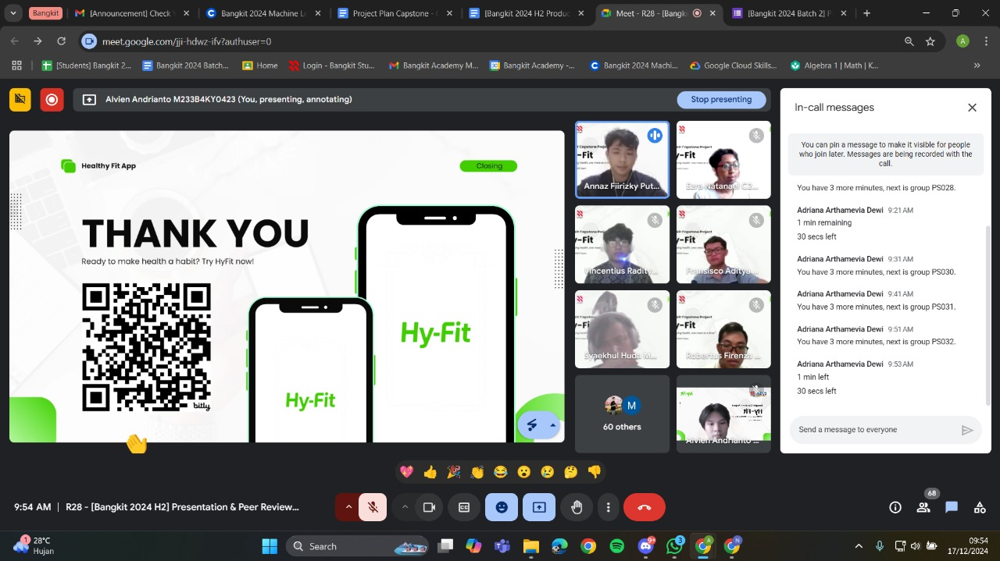

My nearly four-month journey in Bangkit has finally come to an end. It all started when I was 19 years old and saw my senior join the Bangkit program. At first, I had no idea what it was, but after looking it up, it instantly caught my attention.
Like I mentioned in my previous article, Bangkit is a program by major companies like Google and Tokopedia that provides training in specific topics. At the time of writing this, there are three learning paths: Cloud Computing, which I chose, Mobile Development, and Machine Learning.
The reason this program exists is to provide high-quality training and knowledge for Indonesians who may lack skills in their areas of interest. Universities often focus only on the fundamentals, while Bangkit teaches you how to solve real-world problems systematically. You might be wondering how the lectures work. I briefly mentioned this in my previous article, but I’ll explain it now.
It depends on the learning path you choose. I chose Cloud Computing, so all the materials I studied were from Google Cloud Skill Boost (GCSB) and Dicoding, a popular platform for learning IT skills in Indonesia. They provide you with a special account for the Bangkit program, which you use to log in to GCSB. For Dicoding, however, you continue to use your personal account.
If you choose Machine Learning, you’ll learn through Dicoding and Coursera. For Coursera, they provide you with a special account for access, while for Dicoding, you use your personal account. For Mobile Development, you only learn through Dicoding, again using your personal account to log in.
Everything mentioned above follows a self-learning approach - yes, it’s all self-learning.
It might sound intimidating to you - it certainly was for me. But despite all the tasks you need to complete, just remember one thing:
Resilience.I discussed resilience in a previous article, where I shared how I managed my time during the Bangkit program while balancing college responsibilities. You can check out the article here.
Apart from the self-paced courses, you also get ILT sessions. ILT stands for Instructor-Led Training, where you join a meeting with an instructor to discuss the material and ask questions.
From what I remember, there are 7 ILTs in total for Cloud Computing, starting with the basics of cloud computing and progressing to more advanced topics like machine learning deployment. This is specific to the Cloud Computing learning path; I’m not sure about the ILTs for the other learning paths.
Anyway, to cut a long story short, my journey in Bangkit has come to an end. For the final project, also known as the capstone project, we had to team up with participants from other learning paths to create a product.
This product needed to be presented to a panel of ‘judges’ who would provide feedback on areas for improvement, missing features, or downsides of the product.
For those wondering about team size, each team typically consists of 6-7 members. My team had 7 people: 2 from Cloud Computing, 3 from Machine Learning, and 2 from Mobile Development. It might change depending on your batch and timeline. Mine was Batch 2, 2024.
After the seven of us formed a group, we began brainstorming ideas for our project. To cut to the chase, we decided to create an app called Hyfit.
Hyfit is a calorie-tracking app that can scan your food. You can check out our project on GitHub.
We only had one month to finish our capstone project, which was insane because we weren’t professionals - just students still learning at the time.
This tight deadline made us afraid we wouldn’t finish the project on time. After many discussions, we decided to cut down our features. We focused on authentication, profile management, and the scanner feature.
The original idea was to include workout management, an activity tracker, meal planning, and more. We knew that if we continued with all these features, we wouldn’t be able to finish on time.
As a Cloud Computing cohort, it was time for me to create the backend and deploy it on the cloud. I chose NestJS for the backend because it’s a simple, easy-to-setup, and fast framework for backend development. I originally wanted to choose Go, as I’m much more comfortable with Go than TypeScript. However, my friend wasn’t familiar with Go, so I decided to stick with TypeScript.
For the cloud services, we deployed it on Cloud Run because it’s easy, Cloud SQL with a PostgreSQL database, and Cloud Storage for machine learning model deployment. I encountered some confusion when our credits ran out due to a mistake in setting up these cloud services. But thankfully, Bangkit provided additional credits for my project. If you experience the same issue of running out of credits, you can certainly request additional credits from the Bangkit team. However, I can’t promise you’ll receive them, as I believe the credits are limited.
As for the other learning paths, I don’t know the details, but they did what they needed to do. The Machine Learning team created the image recognition model, and the Mobile team developed the frontend and connected it with our APIs.
As we worked on the project, after several meetings and rounds of trial and error, we reached the point where everything was ready to be presented.
There are two presentations you need to complete. The first is a recorded application demo that you and your team will create and send to the Bangkit team. The second is a peer review presentation, where judges from Bangkit will evaluate your project live.
The first presentation was quite easy for us because we just recorded ourselves showcasing our project, including what we had done, the tech stack, the technical aspects, and the SWOT analysis. So, it wasn’t a big problem for us. However, when it came to peer review, we were completely stumped.
Let me first explain the situation during the peer review. There were approximately 10 teams in the Google Meet, each presenting their own project. Each team had 10 minutes to present what their project was about. Meanwhile, the other teams who weren’t presenting had to give a score to the team that was presenting. Holy cow…
Long story short, it was our team’s turn to give the presentation. We tried to stay as calm as possible and prepared scripts for each of us - yes, scripts. In reality, you shouldn’t use a script because it doesn’t look good when your camera is on, as you’ll be seen looking at the script instead of the camera. But in this case, we decided to stick to the script for convenience.
After we finished giving our presentation, we were so happy because it went smoothly. It also meant we were one step closer to completing the Bangkit program.

I’m incredibly grateful to be one step closer to completing the Bangkit program! A big shoutout to my amazing teammates - Renza, Adit, Alvien, Radit, Annaz, and Huda - for making this journey so memorable.
Thank you for your hard work, dedication, and collaboration on our capstone project. It’s been an incredible experience working with such talented and supportive friends. I couldn’t have asked for a better team to share this milestone with. Let’s keep pushing forward and finish strong!
Thank you, dear readers, for following along on this journey. If you’re considering joining Bangkit or are already part of it, remember to always appreciate your teammates and give them your full support. The capstone project can be a stressful time for your team, so showing gratitude and encouragement is key.
Thanks again for reading this. Peace out! ✌️